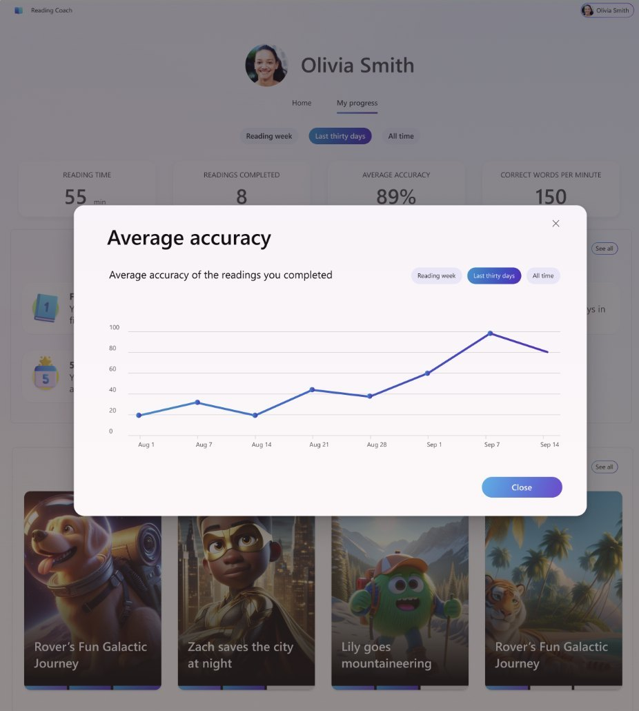

Designing once, scaling across the whole suite
Two frameworks that had to hold up beyond a single screen: EDU Insights, a progressive-disclosure pattern that shipped across every Learning Accelerator and lifted discoverability 40%; and EDU Copilot, one AI experience framework carried consistently across Word, PowerPoint, Excel, Outlook, and Teams.
- 40% Lift in discoverability from the EDU Insights pattern
- 5 Products carrying one EDU Copilot experience: Word, PowerPoint, Excel, Outlook, Teams
- All Learning Accelerators ship the Insights pattern
EDU Insights · The Systems Challenge
EDU Insights: Progressive Disclosure at Scale
Designed a progressive disclosure system that became the foundational pattern for how educators access data across multiple Microsoft learning products. The challenge: balance quick insights with deep exploration across different contexts.

Research
What Teachers Actually Need: Context, Not Just Grades
Interviews with teachers revealed they care about outlier data—a student who usually scores 90% but suddenly drops 20 points. The grade wasn't the insight; the story behind it was. That finding shaped the entire progressive disclosure system: quick surface-level view for scanning, deep context available on demand.

The Challenge
One Pattern, Everywhere
Early ideas ranged from info-icons to card flips to color coding. But Microsoft couldn't universally define what counts as "good" or "bad" trend across every metric—so those approaches fell away. I audited every insight card across every Learning Accelerator and built a framework to ensure the pattern would look and behave consistently everywhere it appeared.
The Solution
Progressive Disclosure (Card → Modal → Full Insights)
Teachers usually land on a review screen mid-grading. A hard jump to a separate Insights app is disorienting. So the pattern steps through three levels instead—card, modal, full app—keeping teachers in flow. On desktop it's a click; on iPad it's a tap. Same behavior everywhere.

The Result
Shipped Across Every Assignment Type
The framework increased card clicks and traffic to Insights by 40%.

EDU Copilot · The Challenge
EDU Copilot: Defining AI in Education at Scale
EDU Copilot had to work consistently across the entire M365 suite: Word, PowerPoint, Excel, Outlook, Teams. That meant partnering with every product team and establishing a shared direction. The hard part wasn't building Copilot. It was ensuring it behaved the same way everywhere teachers encountered it.
The Insight
Trust, Not Capability
Interviews with educators revealed the constraint wasn't technical. It was human. How much did teachers trust an AI suggestion enough to act on it? Which problems did they actually want help with? That trust gap shaped everything.
The Framework
Matching Capability to Confidence
Built an experience framework for how and where Copilot appears across Education products, and a way to prioritize features based on where educators' trust actually was, not where the technology could go.
I explored multiple interaction patterns: in-context experiences (hover states, right-click selections) versus a dedicated chat pane. Both approaches were tested to understand which felt more natural and trustworthy. AI-assisted rubrics shipped first, not because it was technically easier, but as a proof point. It matched what teachers were ready for, rather than asking for more trust than they had.

Other projects
-
 Building Career Coach, 0 → 1
Building Career Coach, 0 → 1
-
 Letting non-engineers train chatbots
Letting non-engineers train chatbots
-
 Simplifying enterprise workflows
Simplifying enterprise workflows
-
Bringing AI into Windows
© Parul Sharma 2026